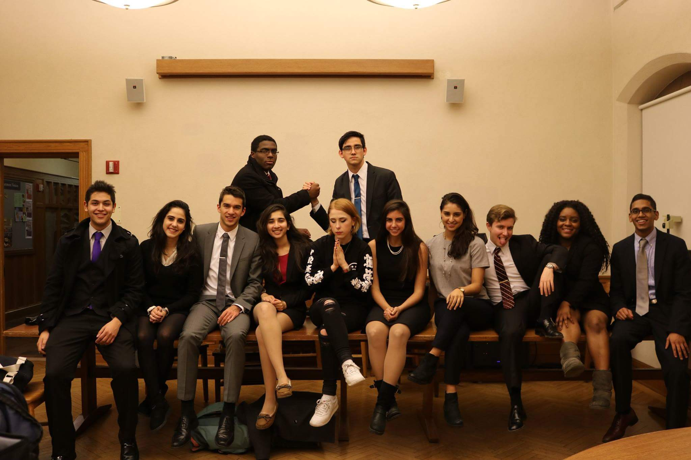

who i am
I'm a computer science student at NYU, but I have LOTS of interests! I am also an e-board member of the university's mock trial team. I am 19 years old, and currently a full time student. In my spare time I like to learn new things, make calligraphy, and work on fun side projects. Scroll down to see the kinds of work that I have done.
what i do
❮
❯

This website!

I designed a webpage for my team too.

My mock trial team after Yale invitational.
I am an eclectically interested developer living, working, and studying in New York. I interned at McKinsey & Company's IT department from June to August of 2016, developing and evaluating technical solutions, interpreting and analyzing data. I am also heavily involved in the leadership of my University's Mock Trial team, ranked 5th in the nation. As the team's Director of Personnel I ensure that our competitors are performing to the rigorous standard that NYU Mock Trial sets. Scroll down to view my contact information.